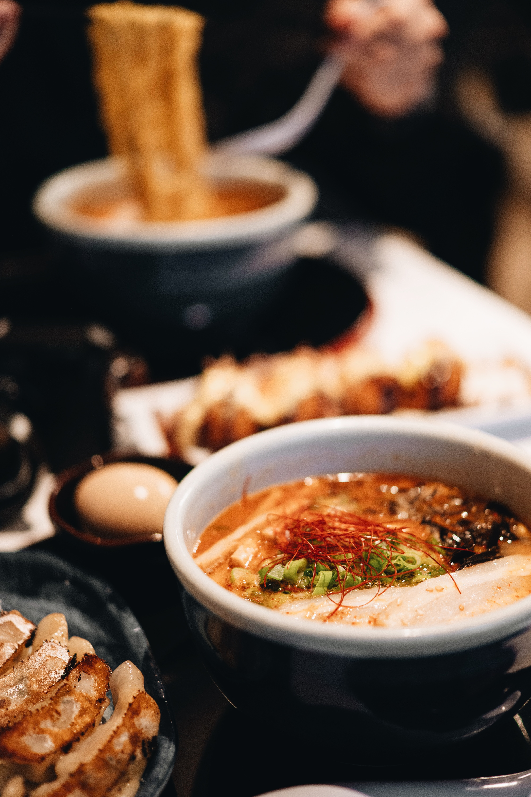

Rutger de Groot

Hello. üê∏
I'm Rutger, a 21 year old designer specialized in web- and digital design.
Currently I am still studying Communication and Multimedia Design where I continue to learn more about UX and develop my programming knowledge. I am based in The Hague, The Netherlands.
I am driven to create awesome online interactions and work on projects where I can grow and learn new things while helping people and solving problems. I love working with people that share this passion with me, together we can push each other to our full potential!
What do I do? üí∞
-
UI- and UX design
This is my most delicate skill, i guess you could call it the crème de la crème of my skillset. I recently finished my UX internship at Yard Digital Agency where I've had the opportunity to work alongside many experts in this field. Most projects listed below will involve some form of UI or UX design.
-
Development
Web development is something I am very interested in, this is the reason I decided to code this very portfolio webiste. I am confident with HTML and CSS. I'm still trying to improve my JavaScript skills but as of right now I'd say I'm on an intermediate level.
-
Motion Design
In my opinion; Motion design is the future. This is the reason that I started learning more about this. Not only do I like making micro-animations while prototyping or adopting this in my CSS and JavaScript. I also like to use Adobe After Effects to create visually pleasing animations.
-
Ambitions
As i've mentioned. I work with lots of different tools and am very flexible. I mainly use Figma and Xd for designing. I can use HTML/CSS well and JS to a certain extend. I'm also able to use other Adobe programmes such as After Effects.
-
Foodsie —
A supermarket adventure
For a school project, I collaborated with a team of designers to develop an application aimed at helping children with grocery shopping by selecting the appropriate items.

-
Apatiency —
Innovation in healthcare
I designed an app that assists healthcare professionals in taking care of Alzheimer's patients. This project was a collaboration with Dio Agency.

-
1SociaalDomein —
A complete new look
For the community platform 1SociaalDomein I made a redesign for their homepage and created a new minimalist look.

-

Amily Walker —
Influencer webpage
A new design for an Influencer who is known for her incredible sense of fashion and strong independent personality. This project was done as a comission.
Let's connect! üç∫
Would you like to work with me, do you have questions about one of my projects or do you simply want to have a chat? Feel free to hit me up by sending me an email or messaging me.